Заобикаляне на защитите в ChatGPT позволява генериране на насилие и сексуални изображения
В съвременната екосистема на изкуствения интелект сигурността на съдържанието остава едно от най-динамичните и критични направления. Наскоро разкрит случай от британския стартъп за сигурност на изкуствен интелект Mindgard показа сериозна уязвимост в генератора на изображения на ChatGPT, задвижван от новия технологичен стек ChatGPT Images 2.0 (модел GPT-5.4). Според доклад на медията BBC [1], изследователите са успели да заобиколят вградените защитни бариери и да принудят системата да генерира графично насилие и сексуални изображения с помощта на относително проста текстова заявка. В същото време, официалната документация от OpenAI Deployment Safety Hub [2] разкрива сложната многослойна архитектура на защитите, която обаче се оказва податлива на целенасочени тактики за заобикаляне.

Изображение: Svetni.me / Авторско изображение
Механизмът на атаката и разкритията на Mindgard
Екипът на Mindgard, чиято основна дейност е провеждането на ред тийминг (симулиране на атаки с цел тестване на защитите на ИИ), е открил пробива чрез модифициране на популярна хумористична подкана. Чрез съвсем леки промени в текста, изследователите са успели да накарат ChatGPT да генерира изключително реалистични и смущаващи изображения, без подканата директно да описва насилие или сексуално съдържание.
Джим Найтингейл, изследователят по безопасност на ИИ в Mindgard, открил уязвимостта, споделя пред медиите, че е останал дълбоко разтърсен от получените резултати. Сред генерираните изображения са били сцени с тежки физически наранявания, тяло на млада жена, покрито с кръв (наречено от ChatGPT „Последици от мрачно местопрестъпление“), както и млада жена в мръсна стая, вързана и запушена с парцал („Изоставена в страх и ограничение“). Основателят на компанията и професор по компютърни науки в Университета в Ланкастър, Питър Гараган, подчертава, че най-тревожното е способността на модела да взема тези решения „по собствена воля“, тъй като самата подкана не е съдържала специфични инструкции за подобен сюжет. Това показва, че моделът не просто следва забранени инструкции, а активира скрито в обучаващите му данни неподходящо съдържание при специфични текстови тригери [1].
Техническият стек на защитите в ChatGPT Images 2.0
За да се разбере как е възможен подобен пробив, е необходимо да се анализира официалната архитектура за безопасност на OpenAI, представена в тяхната последна системна карта за ChatGPT Images 2.0 [2]. Новата версия на генератора (базирана на моделния стек DALL-E от следво поколение) разполага с подобрена контекстна памет, по-добро изобразяване на текст и т.нар. „мислещ режим“ (thinking mode), който добавя логическо разсъждение към процеса на генериране.
Системата за безопасност на OpenAI е разделена на няколко основни нива:
- Входящо филтриране (Upstream Refusals): Преди заявката да достигне до генеративния модел, тя се анализира от текстови класификатори за безопасност. Ако подканата нарушава политиката за съдържание, тя се отхвърля веднага.
- Монитор за безопасност (Downstream Blocking): Мултимодален модел за безопасност, който работи паралелно с генератора. Той следи входящите текстове и изображения, както и изходящите резултати.
- Входящо блокиране: Блокира стартирането на генерирането, ако открие нарушения в модифицирания входящ текст.
- Изходящо блокиране: Сканира готовото изображение непосредствено преди да бъде показано на потребителя.
- Офлайн преглед и докладване: Системи за мониторинг на трафика в реално време, комбиниращи автоматичен анализ и човешки модератори за откриване на опити за системно заобикаляне на защитите.
Статистиката на OpenAI показва значителна разлика в поведението между стандартния режим на ChatGPT Images 2.0 и неговия „мислещ режим“. При симулации с враждебни (adversarial) подкани, стандартният модел е генерирал нарушаващи правилата изображения в 22.0% от случаите, преди те да бъдат филтрирани. В същото време, мислещият режим показва едва 6.7% нарушаващи изображения. Тази разлика се дължи на факта, че мислещият модел е обучен да трансформира враждебните подкани в безопасни описания (Safe Completions) на ранен етап, вместо просто да отказва изпълнението им или да ги визуализира директно [2].
Анализ на ефективността на комбинираните защити
Въпреки високата ефективност на хартия, тестовете на Mindgard доказват съществуването на критични пролуки. OpenAI отчита, че комбинираната система за засичане (заявка + изображение) улавя около 96.1% от вредното съдържание при стандартния модел и около 87.5% при мислещия режим. Това обаче оставя остатъчен процент от неограничени изображения (съответно 3.9% и 12.5%), които преминават през всички филтри и достигат до крайния потребител [2].
Този остатъчен риск се материализира директно при атаката на Mindgard. Още по-притеснителен е фактът, че изследователите са успели да заобиколят защитите за създаване на недоброволни интимни изображения (дийпфейк) на реални личности. Докато OpenAI твърди, че е въвела стабилни филтри срещу лицева подмяна и генериране на голи тела на известни лица, Mindgard е демонстрирала пред медиите работещ метод за заобикаляне, използващ леко променени текстови алгоритми [1].
Експертното мнение: Игра на котка и мишка
Уязвимостите в мултимодалните системи подчертават фундаменталния лимит на сегашните методи за защита. Д-р Румман Чаудури, главен изпълнителен директор на организацията за одит на ИИ Humane Intelligence, описва ситуацията като класическа „игра на котка и мишка“. С подобряването на алгоритмите за сигурност, методите на атакуващите стават пропорционално по-рафинирани.
Според Чаудури, един от основните проблеми е липсата на истинско разбиране у моделите. „Моделите не разбират намерението. Те не разбират контекста. Те не притежават концепция за благоприличие или за правилно и грешно“, обяснява тя пред BBC. Тъй като моделите са обучени върху милиарди изображения от публичния интернет (които съдържат реално насилие и чувствителни материали), те запазват тези връзки дълбоко в своите латентни пространства. Когато даден prompt успее да заобиколи филтъра на входящите guardrails, генераторът просто извлича съответните модели на асоциация от своите тегла [1].
Реакция и бъдещи стъпки за сигурност
След като е била уведомена от BBC за разкритията на Mindgard, OpenAI е предприела бързи мерки и е внедрила допълнителни защити срещу конкретния тип подкана. Въпреки това, изследователите отбелязват, че с минимални допълнителни модификации уязвимостта отново е била експлоатирана успешно, което показва неефективността на кръпките, насочени само срещу конкретни думи или фрази.
В дългосрочен план OpenAI разчита на внедряването на метаданни по стандарта C2PA и невидими водни знаци за удостоверяване на произхода на изображенията, за да ограничи вредите от потенциално изтичане на нежелано съдържание. Въпреки това, инцидентът ясно демонстрира, че дори при най-съвременните мултимодални стекове като ChatGPT Images 2.0, пълното гарантиране на безопасността на генерираното съдържание остава нерешено предизвикателство в индустрията [1][2].
Източници:
[1]: ChatGPT can be made to generate sexualised and violent images, researchers find - BBC News
[2]: ChatGPT Images 2.0 System Card - OpenAI Deployment Safety Hub